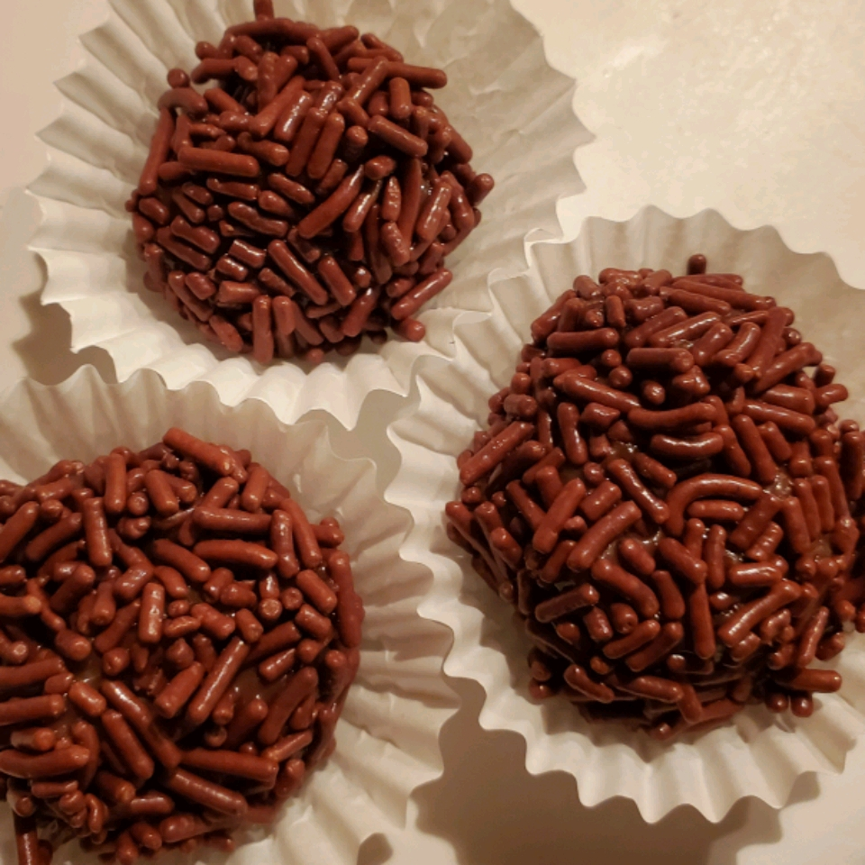

Brigadeiro

Ingredients
- 3 tablespoons unsweetened cocoa
- 1 tablespoon of butter
- 1 (14 ounce) can sweetened condensed milk
Step
-
In a medium saucepan over medium heat, combine cocoa, butter and
condensed milk. Cook, stirring, until thickened, about 10 minutes.
Remove from heat and let rest until cool enough to handle. Form into
small balls and eat at once or chill until serving.
<<< Back